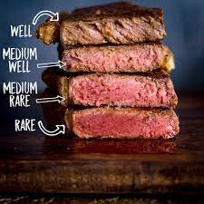

Steak Time!

Description
My favorite way to cook a steak.
Ingredients
- New York Strip Steak
- Oil
- Large Coarse Sea Salt
Steps
- Let steak rest at room temperature for at least 30 minutes
- Preheat skillet in oven to 400 degrees F in the meantime
- Lightly salt and oil the steak on both sides and place into the pan (Remember your oven mitt!)
- Bake for 10-15 minutes
- Remove pan and place on hot stove-top (on high setting)
- Sear each side of steak to create a crust
- Serve with baked potato for a truly epic meal!!!